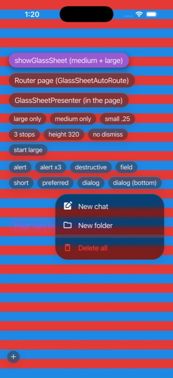

Каталог / Оверлеи: листы, диалоги, меню
showGlassMenu и GlassMenuButton
Нативное меню (UIMenu): стеклянная панель, вырастающая из кнопки.
Как выглядит



Что это
Панель растёт из якоря с пружиной и закрывается тапом вне или выбором пункта. С origin меню вырастает из стекла самой кнопки (кнопка скрыта, пока меню открыто), как на нативных glass-кнопках.
Пример
GlassMenuButton(
entries: [
GlassMenuItem(label: 'Копировать', leading: RavelIcon(RavelIconKind.pencil), onSelected: copy),
GlassMenuItem(label: 'Выбрано', checked: true, onSelected: () {}),
const GlassMenuDivider(),
GlassMenuItem(label: 'Удалить', destructive: true, onSelected: remove),
],
builder: (context, open) => GlassCircleButton(icon: RavelIcon(RavelIconKind.menu), onPressed: open),
)Морф из кнопки
final origin = GlassSheetOriginController();
GlassSheetOrigin(
controller: origin,
child: GlassCircleButton(
icon: RavelIcon(RavelIconKind.menu),
onPressed: () => showGlassMenu(context, origin: origin, entries: entries),
),
)С GlassMenuButton как onLongPress получается контекстное меню.
Параметры (из dartdoc)
GlassMenuButton
| Параметр | Тип | По умолчанию | Описание |
|---|---|---|---|
builder | Widget Function(BuildContext context, VoidCallback open) | required | |
entries | List<GlassMenuEntry> | required | |
width | double | 254 | |
origin | GlassSheetOriginController? | See showGlassMenu: the menu grows out of this control's glass. |
GlassMenuItem
| Параметр | Тип | По умолчанию | Описание |
|---|---|---|---|
label | String | required | |
leading | Widget? | ||
destructive | bool | false | Red label and icon (delete, sign out...). |
checked | bool | false | |
onSelected | VoidCallback? |
Импорт: import 'package:swiftuikit/swiftuikit.dart';